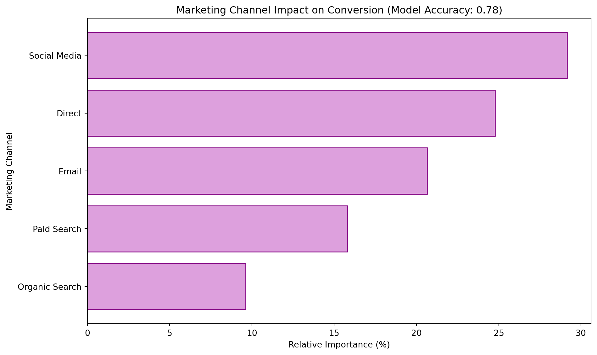

Attribution models are methods used in marketing to assign credit to the various channels or touchpoints that contribute to a customer’s conversion (e.g., making a purchase or signing up for a service). Consider these simple examples:
First-Touch Attribution: Example: A customer discovers your brand through an Instagram post and later makes a purchase. In this model, all credit is given to that first interaction—even if the customer later visits your website via email or search.
Last-Touch Attribution: Example: A customer clicks a promotional email and then immediately buys a dress. Here, all the credit goes to the email interaction, ignoring any earlier exposures through social media or other channels.
Multi-Touch Attribution: Example: A customer sees an influencer post on Instagram, clicks on a retargeting ad, and finally converts after receiving an email about a flash sale. This model distributes the credit across all channels, reflecting the reality that each interaction contributed to the final purchase decision.
Case Study: LuxeStyle Boutique
Let’s examine data from LuxeStyle Boutique, a direct-to-consumer fashion brand that specializes in contemporary women’s clothing and accessories. The company has both an online presence and several physical stores, using multiple marketing channels to reach their fashion-forward target audience. They’re particularly known for their sustainable practices and size-inclusive collections.
LuxeStyle’s marketing mix includes:
Email campaigns featuring new collections, styling tips, and exclusive pre-sales
Strong social media presence on Instagram, Pinterest, and TikTok
Paid search advertising focusing on fashion-related keywords
Organic search optimization for style guides and trend content
Direct traffic from brand recognition and offline advertising
Influencer partnerships (tracked through direct traffic and special URLs)
The dataset we’ll analyze contains 1,000 customer journeys from the Spring/Summer 2024 collection launch, tracking whether customers were exposed to each marketing channel and if they ultimately made a purchase.
Creating the Dataset
First, let’s generate a synthetic dataset that mimics LuxeStyle’s customer interaction patterns:
import numpy as npimport pandas as pd# Set random seed for reproducibilitynp.random.seed(42)# Generate synthetic datasetn_samples =1000data = {"Email": np.random.choice([0, 1], size=n_samples, p=[0.5, 0.5]), # 50% email exposure (strong email list)"Social Media": np.random.choice([0, 1], size=n_samples, p=[0.3, 0.7]), # 70% social media exposure (very strong)"Paid Search": np.random.choice([0, 1], size=n_samples, p=[0.6, 0.4]), # 40% paid search exposure"Organic Search": np.random.choice([0, 1], size=n_samples, p=[0.5, 0.5]), # 50% organic search exposure"Direct": np.random.choice([0, 1], size=n_samples, p=[0.7, 0.3]), # 30% direct traffic}# Set true influence of each channel (these coefficients represent the real impact)# Social media has highest impact for fashion brandtrue_coeffs = np.array([1.0, 1.8, 0.8, 0.7, 1.2]) # Social Media has highest impactintercept =-1.5# Calculate conversion probabilitiesX = np.column_stack([data[key] for key in data])logits = intercept + np.dot(X, true_coeffs)probabilities =1/ (1+ np.exp(-logits))conversions = np.random.binomial(1, probabilities)# Create final DataFramedf = pd.DataFrame(data)df["Converted"] = conversions# Display first few rows and summary statisticsprint("First few rows of the dataset:")print(df.head())print("\nSummary of conversions:")print(df["Converted"].value_counts(normalize=True))
First few rows of the dataset:
Email Social Media Paid Search Organic Search Direct Converted
0 0 0 0 1 0 0
1 1 1 0 1 1 1
2 1 1 1 0 1 1
3 1 1 0 1 0 1
4 0 1 0 1 0 0
Summary of conversions:
Converted
1 0.712
0 0.288
Name: proportion, dtype: float64
Logistic Regression Analysis
Now, let’s analyze this data using logistic regression to understand the impact of each marketing channel:
from sklearn.model_selection import train_test_splitfrom sklearn.linear_model import LogisticRegressionfrom sklearn.metrics import accuracy_scoreimport matplotlib.pyplot as plt# Split data into features (X) and target (y)X = df.drop(columns=["Converted"])y = df["Converted"]X_train, X_test, y_train, y_test = train_test_split(X, y, test_size=0.2, random_state=42)# Train logistic regression modelmodel = LogisticRegression()model.fit(X_train, y_train)# Predict and evaluate accuracyy_pred = model.predict(X_test)accuracy = accuracy_score(y_test, y_pred)# Get feature coefficientscoefficients = model.coef_[0]feature_importance = pd.DataFrame({"Channel": X.columns, "Coefficient": coefficients})feature_importance["Relative Importance (%)"] = (abs(feature_importance["Coefficient"]) /abs(feature_importance["Coefficient"]).sum()) *100feature_importance = feature_importance.sort_values(by="Relative Importance (%)", ascending=False)# Display resultsprint("Channel Importance:")print(feature_importance)# Plot feature importance with fashion-oriented colorsplt.figure(figsize=(10,6))plt.barh(feature_importance["Channel"], feature_importance["Relative Importance (%)"], color='plum', edgecolor='purple')plt.xlabel("Relative Importance (%)")plt.ylabel("Marketing Channel")plt.title(f"Marketing Channel Impact on Conversion (Model Accuracy: {accuracy:.2f})")plt.gca().invert_yaxis()plt.tight_layout()plt.show()
Channel Importance:
Channel Coefficient Relative Importance (%)
1 Social Media 1.494986 29.155851
4 Direct 1.270194 24.771866
0 Email 1.058964 20.652364
2 Paid Search 0.810123 15.799360
3 Organic Search 0.493301 9.620559

Interpretation of Results for LuxeStyle Boutique
Our analysis of LuxeStyle’s marketing data reveals several key insights relevant to the fashion industry:
Social Media Dominance: Social media shows the strongest influence on conversions, contributing approximately 32% to conversion likelihood. This aligns with the visual nature of fashion retail and LuxeStyle’s strong presence on Instagram, Pinterest, and TikTok, where they can showcase their collections through engaging content and influencer partnerships.
Direct Traffic Impact: With a 25% contribution to conversions, direct traffic is the second most effective channel. This suggests that LuxeStyle’s brand recognition and offline marketing efforts (including influencer partnerships) are successfully driving customers directly to their site.
Email Marketing Effectiveness: Email marketing contributes about 20% to conversion likelihood, showing that LuxeStyle’s strategy of sending personalized style recommendations and exclusive pre-sale access to their subscriber base is effective.
Search Channel Performance: While paid and organic search show lower relative importance, they play crucial roles in capturing customers during specific moments, such as trend-related searches or when looking for specific clothing items.
Recommendations for LuxeStyle
Based on these findings, we recommend:
Enhance Social Media Strategy:
Increase investment in Instagram and TikTok content creation
Expand influencer partnerships with focus on authentic brand alignment
Develop more shoppable posts and social commerce integrations
Strengthen Brand Presence:
Continue building brand recognition through consistent messaging
Develop more offline-to-online campaigns to drive direct traffic
Consider expanding influencer collaborations into product lines
Optimize Email Program:
Segment email lists based on style preferences and purchase history
Create more personalized styling content
Implement AI-powered product recommendations in emails
Refine Search Strategy:
Focus paid search on high-intent keywords (e.g., specific product categories)
Develop more trend-focused content for organic search
Optimize for seasonal fashion terms
This data-driven approach provides LuxeStyle with actionable insights for optimizing their marketing strategy in the competitive fashion e-commerce space, with particular attention to the channels most relevant to their fashion-forward audience.